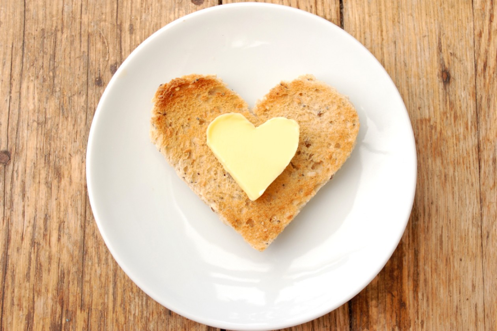

Міфологія вершкового масла

Вершове масло — was ist das****?
Масло — це молочний продукт, отриманий шляхом збивання вершків. Відповідно до технологічних особливостей, розрізняють різні види масла, як наприклад солодковершкове (із пастеризованих вершків) чи кисловершкове (із пастеризованих вершків, заквашених чистим культурами молочнокислих бактерій), топлене(із масовою часткою жиру — 99,8%) та солоне (із додаванням кухонної солі).
За кількістю жиру у продукті та норм ДСТУ 4399:2005, буває вершкове масло екстра (80-85%), селянське(72,5-79,9%) та бутербробне(61,5-72,4%), а також, власне, вже згадане — топлене масло (молочний жир — більше 99,8%).
Відразувідповідаємона популярне "міфологічне" питання — "а що ж складає ту решту масла, що не є жиром?".А та чудоварешта масла представляє собоютак звану плазму масла — вона складається із білків молока, води, лактози (молочного цукру), мінеральних солей, молочної кислоти та водорозчинних вітамінів. Отже чим більше плазми, тим менша жирність масла та навпаки, іце є абсолютно нормально.
Фальсифікат та мімікрія
Важливо розуміти, що буває масло, а бувають продукти, які дуже схожі на масло , але, згідно визначенням та норм, маслом не є. Прикладами таких продуктів найчастіше є спреди та маргарин. На їх упаковці можуть малювати корівок, кізочок, але написати "вершкове масло", та послатися на вище задане священне ДСТУ ніхто не має права. Тому купуючи масло, слід уважно читати надписи на упаковці.
М**аргарин, до молочних продуктів ніякого відношення не має. Він представляє собою гідрогенізовані рослинні олії та вдало підібрані барвники з ароматизаторами. Головна небезпека маргарину полягає у високому вмісті у ньому транс-жирів — до 50%. Нагадаємо, що під час процесу гідрогенізації (перетворення рідких рослинних олій на твердий маргарин) частина жирних кислот змінює свою просторову конфігурацію із цис-форми на транс-форму. А ферменти нашого організму не можуть такі жирні кислоти переробити. Тут справедливо зробити маленьке уточнення - транс-жири не є якоюсь отрутою, з'ївши яку, доведеться відразу померти. Тваринні жири, зокрема, вершкове масло та яловичий жир також містять невелику частку транс-жирів — до 8%.
Сучасні, але не завжди дешеві технології дозволяють отримувати маргарин без транс-жирів. Якщо на упаковці зазначено, що продукт містить переетирефіковані жири, то значить, що транс-жирів там немає.
Спред - це емульсійна суміш молочного та рослинного жиру, де масова частка молочного жиру складає не менш як одну четверту загальної кількості жиру у продукті (ДСТУ 4445:2005). Гарною новиною є те, що вміст таких страшних усім транс-жирів у спредах регулюється державними стандартами України і не має перевищувати 8%, як і у звичайному вершковому маслі. Тому з цих міркувань, спреди — цілком прийнятна для споживання штука.
Питання, що цікавить кожного — чи можна відрізнити масло від "немасла" в домашніх умовах?
Часто можна зустріти опис експерименту, де в склянку з гарячою водою кидають шматочок досліджуваного продукту і оцінюють, як він плавиться, та ступінь мутності води. Таким способом можна відрізнити лише маргарин від масла чи спреду. Масло містить молочний залишок і саме він утворить білувату емульсію із водою. Вода ж із маргарином буде прозорою. Тому, якщо Ви підозрюєте, що маєте справу із фальсифікатом масла маргарином, можна таким чином це перевірити. Однак не вдасться у такий спосіб відрізнити масло від спреду, бо і там, і там є частка молока, тому якась мутність все одно буде присутня. До слова, топлене масло також, майже, як маргарин, дасть дуже слабку мутність, бо молочного залишку там практично нема.
М'яке чи крихке?
Про те, що крихкість чи м'якість визначає справжність масла — насправді, міф. Ця характеристика залежить відсезонності— у весняно-літній період переважають низькоплавкі жири, а взимку — тугоплавкі. До слова, відтінок масла також варіює із сезонністю — зимове масло світліше, а влітку — жовтіше. Також підвищена крихкість масла може бути пов'язана із деяким недотриманням температурних умов у процесі збиванні вершків при виробництві продукту. За таких умов плазма в жировій фазі може розподілятися нерівномірно, що надає маслу більшої крихкості.
Корисне чи шкідливе?
Про те, що масло — цінне джерело поживних речовин, жирів та навіть вітаміну А, можна прочитати в численних джерелах. Воно дійсно є корисним продуктом харчування, якщо не забувати про банальну поміркованість. Справа в тому, що наш сучасний раціон часто містить надмірну кількість тваринних жирів. Це є фактором ризику для виникнення серцевосудинних хвороб, особливо, для пацієнтів старшого віку. Тому у рекомендаціях, якими керуються медики, вказано про необхідність розумного обмеження тваринних жирів, у тому числі, і молочного жиру. Людей молодшого віку та із гарними показниками холестерину, це стосується менше.
Ну і наостанок — купуючи масло, завжди слід звертати увагу на термін придатності та умови зберігання продукту — не вище 6°С, а ліпше — нижче 0°С.
Смачного Вам і корисного!
Ми дуже вдячні за плідне обговорення цієї теми технологу молочного виробництва, Наталії Васильєвій, хіміку, Глібу Репічу та кардіологу, Оксані Лівінській.